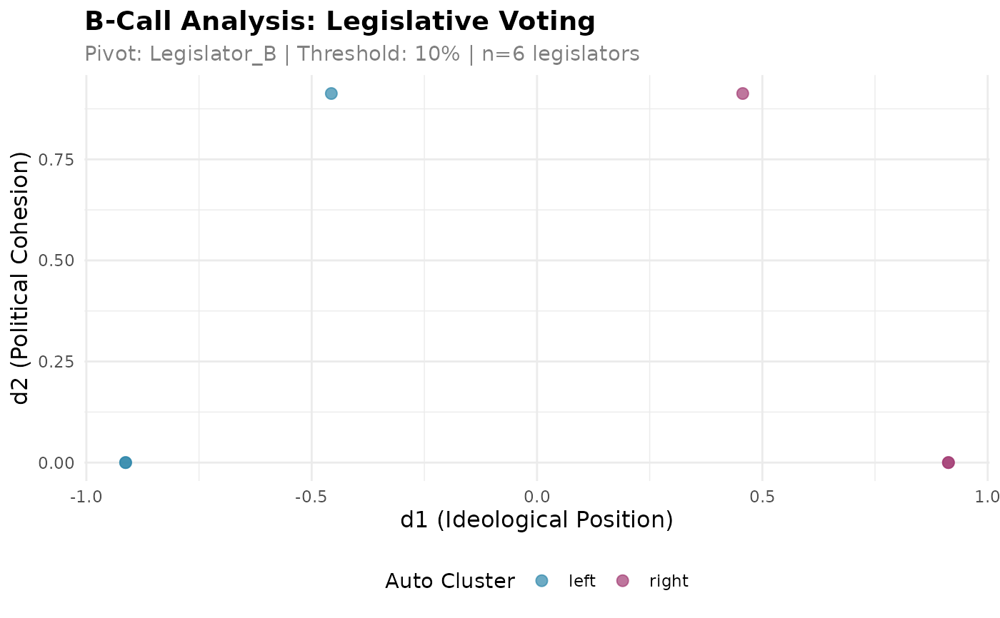

PRINCIPLE 1: User provides only rollcall data. This function automatically clusters legislators into two groups and runs B-Call analysis.
Arguments
- rollcall
data.frame with rollcall voting data (legislators as rows, votes as columns) Values: 1 (Yes), -1 (No), 0 (Abstention), NA (Absent)
- distance_method
Integer, distance metric for clustering (1 = Manhattan, 2 = Euclidean)
- pivot
Character, optional pivot legislator name. The pivot's cluster is labelled 'right' and its side of d1 is positive. If NULL, the cluster that contains the first row of
rollcallis labelled 'right', its legislator with the highest participation becomes the pivot, and a warning is given because the sign of d1 is then arbitrary.- threshold
Numeric, minimum participation threshold (0.0-1.0)
- verbose
Logical, whether to print progress messages
Value
A list of class bcall_result, printed briefly, with:
- results: data.frame with d1, d2, auto_cluster for each legislator
- bcall_object: BCall R6 object
- clustering_object: Clustering R6 object
- metadata: Analysis metadata
Examples
# Create sample rollcall data
rollcall <- data.frame(
vote1 = c(1, -1, 1, -1, 1, -1),
vote2 = c(1, -1, 1, -1, 1, -1),
vote3 = c(-1, 1, -1, 1, -1, 1),
vote4 = c(1, 1, -1, -1, 1, -1),
row.names = paste0("Legislator_", LETTERS[1:6])
)
# Run automatic clustering analysis
results <- bcall_auto(rollcall, distance_method = 1, pivot = "Legislator_B",
threshold = 0.1, verbose = FALSE)
# View results
head(results$results)
#> d1 d2 legislator auto_cluster
#> Legislator_A -0.9128709 0.0000000 Legislator_A left
#> Legislator_B 0.4564355 0.9128709 Legislator_B right
#> Legislator_C -0.4564355 0.9128709 Legislator_C left
#> Legislator_D 0.9128709 0.0000000 Legislator_D right
#> Legislator_E -0.9128709 0.0000000 Legislator_E left
#> Legislator_F 0.9128709 0.0000000 Legislator_F right
# Visualize
# \donttest{
plot_bcall_analysis(results)

if (requireNamespace("plotly", quietly = TRUE)) {
plot_bcall_analysis_interactive(results)
}
# }